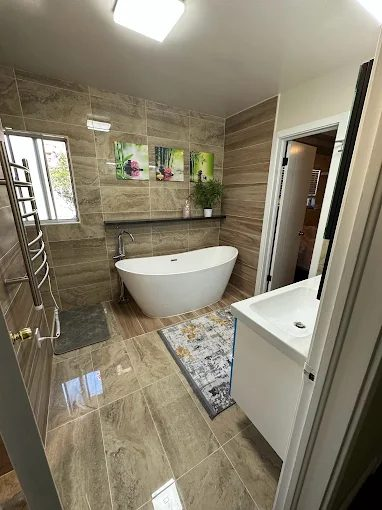
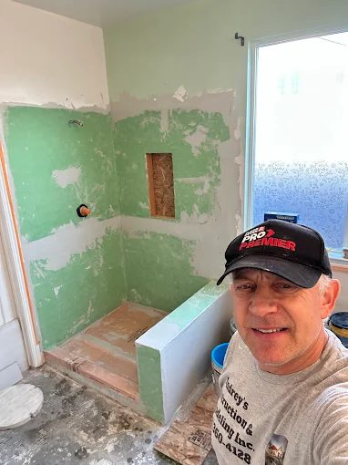
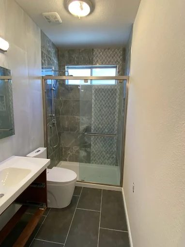
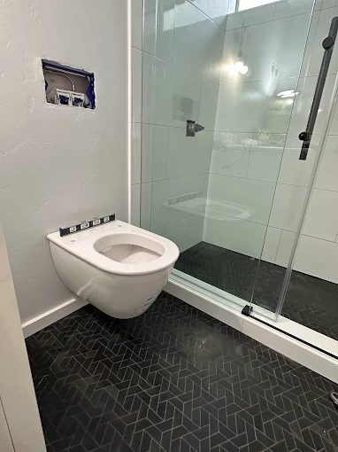
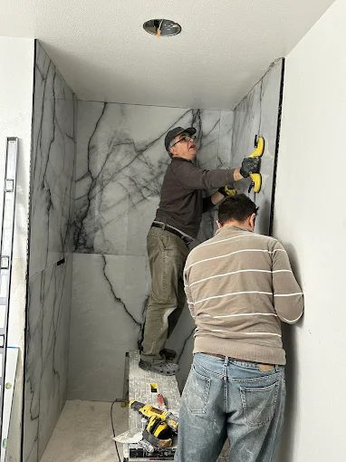

Expert craftsmanship, honest pricing, and zero surprises — backed by 20+ years of experience and 500+ completed projects across the Central Valley.

When you hire Andrey's Construction & Remodeling, you're not getting a sales rep and a crew of strangers. You're getting Andrey — a craftsman who has personally overseen every project for over two decades. He shows up, takes measurements, gives you a straight answer on price, and sees the job through to your satisfaction.
We specialize in bathroom remodels across Fresno, Clovis, Sanger, and surrounding areas. From simple fixture updates to complete gut remodels with custom tile and new plumbing, we handle it all under one roof with no subcontractor runaround.
Get a Free Estimate
Whether you're replacing a cracked tub with a walk-in shower or upgrading to a soaking tub, we handle the complete tear-out and rebuild. Options include:
Tile work is where craftsmanship really shows. Andrey has set thousands of square feet of tile across Fresno homes, from classic 12×12 ceramic to large-format porcelain and natural stone.


Updating your vanity is one of the highest-ROI moves in a bathroom remodel. We supply and install:
We handle plumbing and electrical in-house — no third-party coordination, no scheduling delays. Everything is done to California code.

Every project is unique, but here's a general guide to help you plan. All estimates are free and itemized — no vague ranges, no surprises.
| Project Type | Typical Scope | Estimated Range |
|---|---|---|
| Basic Refresh | New fixtures, paint, flooring, vanity light | $3,500 – $7,000 |
| Mid-Range Remodel | New shower/tub, tile, vanity, toilet, lighting | $10,000 – $18,000 |
| Full Gut Remodel | Complete demo + rebuild with custom tile and new plumbing | $18,000 – $30,000+ |
| Walk-In Shower Conversion | Remove tub, frame new shower, tile, glass door | $6,500 – $14,000 |
| Tile Replacement | Floor + shower walls, material and labor | $3,000 – $8,000 |
Ranges reflect Fresno-area labor and material costs as of 2025. Actual quotes depend on project scope and material selections.
Bathroom remodel costs in Fresno typically range from $5,000–$8,000 for a basic refresh to $15,000–$30,000+ for a full gut remodel with custom tile and walk-in shower. We provide free, itemized estimates with no hidden fees so you know exactly what you're paying for before a single tile is removed.
Most bathroom remodels take 1–3 weeks depending on scope. A simple fixture and tile update may be done in 5–7 business days. A full gut remodel with new plumbing and electrical runs 2–4 weeks. We provide a firm timeline in your estimate and stick to it.
Permits are required in Fresno for structural changes, plumbing relocation, or electrical upgrades. We handle the permit process for you as part of the project. Cosmetic work like replacing fixtures or retiling typically doesn't require a permit.
Yes. Andrey's Construction & Remodeling Inc. is fully licensed with the California Contractors State License Board (CSLB) and carries general liability insurance and workers' compensation. We're happy to provide proof of insurance before any project begins.
We don't offer in-house financing, but we provide detailed itemized estimates that many homeowners use when applying for home improvement loans or HELOCs through their bank or credit union.
Andrey personally visits every home for a free on-site consultation. No pressure, no obligation.